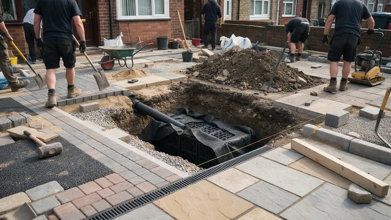
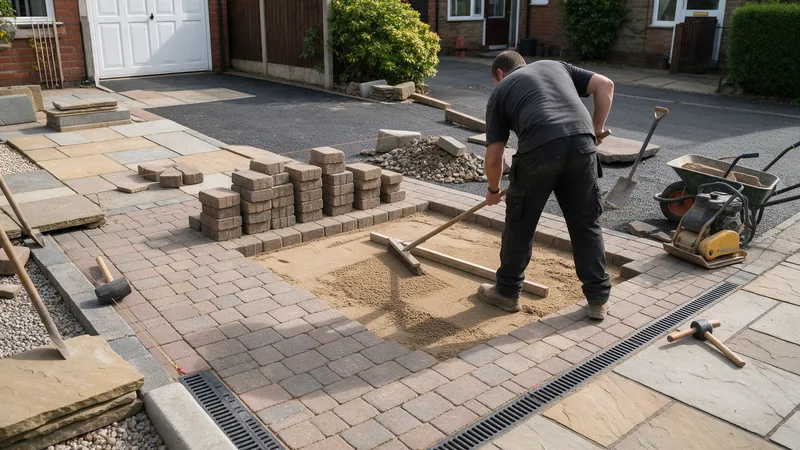

Every drive is a small roof
A front drive is a few dozen square metres of surface collecting rain. Before it was paved, that water soaked into the ground where it landed. Pave it with something solid and the same water now has to go somewhere, all at once, in the direction you have given it.
Get that wrong and it is not subtle. Water runs down the drive at the house and sits against the brickwork. Or it sheets out across the footway, which is a nuisance in October and a sheet of ice in January. Or it ponds in the one dip and grows a green patch you can never scrub off.
The three places water can go
Falls, channels and thresholds
Most of the work is a fall: a gentle slope built into the surface so water runs where you decided rather than where the ground fancies. Where the ground slopes towards the house or towards the road, a channel drain across the threshold or the mouth of the drive catches it before it gets there.
A channel is only as good as what it empties into, which is where plenty of drives fail. A smart grating along the garage door connected to nothing is a trough. We will tell you where yours would discharge and what that needs, and if the honest answer is a soakaway in the lawn, that is what the quote says.
What we will not claim
We are not going to tell you a drive is compliant with any scheme, standard or regulation, because that is not something a demo site can say and it is not a thing a paving firm should wave about in a brochure. What anybody real should do is tell you plainly where your water goes, put it in writing, and point you at the council for anything that needs their say so.
 Generated photo
Generated photoGenerated for this demo. Not a photograph of a real job.

Generated photoThe part nobody photographs, under the part everybody does. Generated for this demo.
On the job
How this one usually goes.
- We work out where the water is going nowBefore anything is paved. The existing falls, the gullies, the downpipes, where the puddles are and which way the ground drops.
- We pick the routeInto your own ground, through a permeable surface, or to a drain with permission. One of those three, decided and written down.
- Excavation and the buried partSoakaway crates or a stone filled pit, membrane, pipework and the connections. All of it below ground, all of it done before the surface.
- Channels and thresholdsChannel drain set in concrete across the garage door or the mouth of the drive, levelled so the grating sits flush rather than proud.
- Falls built into the surfaceThe paving laid to the fall we planned, not flat, and water tested with a hose at the end so you can see where it actually goes.
A sample running order for this demo. Yours depends on the house and what comes out of the ground.
Questions
Asked about this job.
Why is my drive flooding?
Usually one of four things: no fall, or a fall going the wrong way. A soakaway or a gully that has silted up. A surface sold as permeable laid on a base that is not. Or more water arriving than the ground can take, often because a downpipe discharges on to it. The fix follows the cause, and the cause is usually findable in half an hour with a hose.
Can you connect my drive to the drain outside the house?
Not on our own say so. A surface water drain or sewer belongs to somebody, and connecting to it needs their agreement. Your council or water company will tell you whether it is allowed for your property. Plenty of drives get drained perfectly well without touching one, so it is worth asking the question the other way round first.
Does permeable paving need drainage underneath?
Yes, and that is the part people are surprised by. The blocks or the resin let water through, then it has to go into a stone layer designed to hold it and let it away. Permeable paving over a normal sub base with nowhere to go is a drive that floods slightly more slowly.
Is a soakaway a big job?
It is a hole, crates or clean stone, a membrane and a pipe, so it is a day of digging rather than a mystery. The things that decide whether it will work are how well your ground drains and how far it has to be from the house and the boundary. If the ground is heavy clay, we will say so rather than bury a soakaway that fills up and stays full.
General trade knowledge written for this demo, not advice on your property.
Our work
Sample jobs like this.
Generated photoChannel drain at the garageLittle Lever SampleGenerated photoSoakaway crates going inBlackrod Sample Generated photoTarmac with a block edgeFarnworth Sample
Generated photoTarmac with a block edgeFarnworth Sample
Generated photoSunken patch lifted and relaidWesthoughton SampleMade up samples with generated pictures. Tap one for the detail.
Also
The other things we do.
Block paving driveways
Dug out properly, a sub base that carries a car, and blocks laid to a line. The bit you see is the last day of the job and the smallest part of it.
More →Tarmac and resin driveways
Tarmac where you want one quiet surface and a good edge. Resin bound where you want gravel that stays where you put it and lets water through.
More →Patios
Sandstone, porcelain or concrete flags on a full bed, falling away from the house, with the joints and the step down sorted before anybody sits on it.
More →Dropped kerbs, through the council
The crossing from the road on to your drive. The council decides whether you can have one and who may build it, so that part comes first.
More →Driveway cleaning and repairs
Washing, re-sanding and sealing, sunken patches lifted and relaid, and the odd flag that rocks. Far more drives need this than need replacing.
More →Shall we come and look at the levels?
Tell us what is there now and your postcode. If something has sunk and somebody could trip on it, use the urgent line instead.